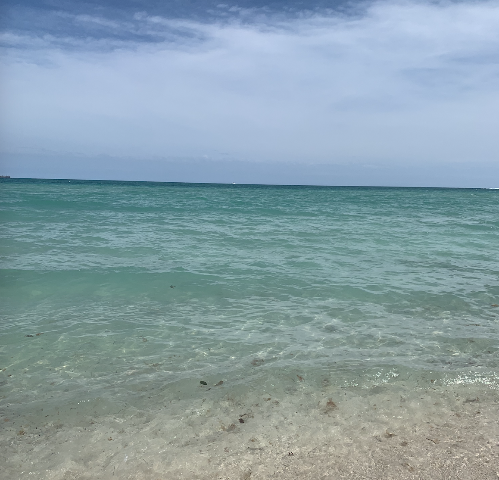

I am a Sophomore at the University of Michigan studying User Experience Design through the School of Information! I have always been interested in visual design and creating things, and I love running and longboarding in my free time. I am experienced in C++, Python, and HTML and am continually developing my prototyping and UX research skills. I am always looking for new opportunities to craft my design skills while also learning new web programs and skills to create more projects. I am driven, motivated, and passionate about the work that I do, and I thrive in fast-paced environments. I am always appreciative of critiques and feedback in order to improve projects and am able to easily communicate needs to others and take on multiple responsibilities. I am looking for intern positions in UX design, Web design, or Product design for Summer 2021. I am available to work virtually or in person.
This is the ocean in Florida, one of my favorite places to go. I plan to go there again this year in the Spring.